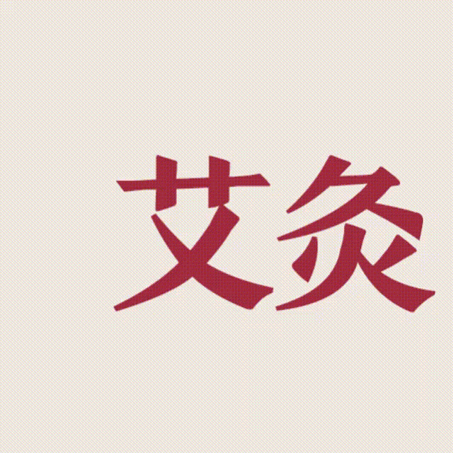
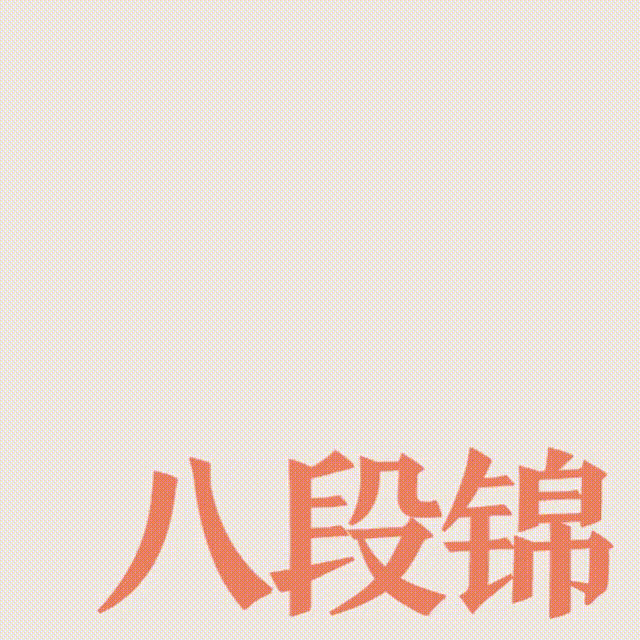
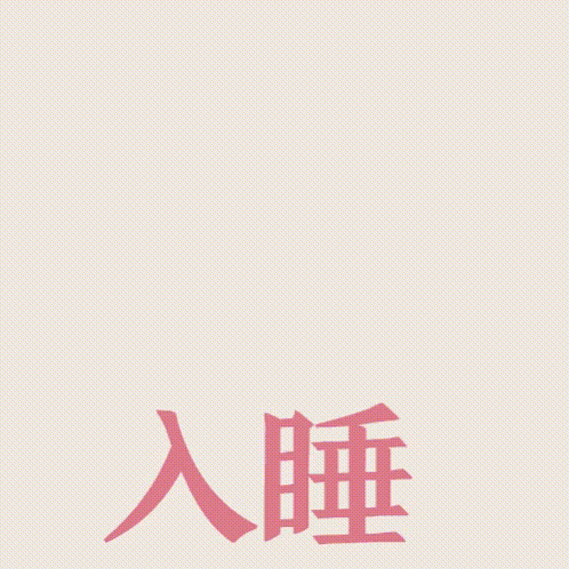

6831.8万的微博话题讨论量，15.3亿次的抖音视频播放量，#脆皮大学生#在近期成为近期年轻人的新外号。“脆皮”原为游戏术语，代指防御力低下且生命值微弱的角色，但在生活、工作、学业等方面压力不断加大的现实状况下，“脆皮现象”在年轻人群体中愈发突出。
丁香医生发布的《2023年国民健康洞察报告》显示，相较于其他年龄层民众，“00后”的健康困扰最多，熬夜、缺乏运动、久坐、磕甜等不良生活习惯导致“00后”在皮肤、视力、脱发、情绪、失眠等方面的健康问题更为显著。这些困扰促使年轻人纷纷树立起健康意识，加入养生大军。《2023中国新消费趋势白皮书》显示，超过四成“00后”选择为健康花钱，购买过功能性保健食品或保健仪器。可见，健康管理已呈现低龄化、年轻化态势，而“养生”则成为年轻人乐于探讨并尝试的方式。
微博、豆瓣小组作为汇聚同好的网络社区，聚集了众多养生青年。在豆瓣平台上，一个以“我们不是中老年，但是就是爱养生！”为口号的小组格外突出，吸引32402名年轻用户、发布近千条讨论......“我们就是爱养生”小组生动展现了当下年轻人的养生现状。
为此，团队针对“我们就是爱养生”豆瓣小组和微博相关热搜话题进行数据抓取。
一、抓取“我们就是爱养生”豆瓣小组上2021年5月11日至2023年12月22日的1057条用户帖子，剔除无关内容后，共获得813条有效数据； 二、抓取微博话题#在中医院喝到了中药奶茶#、#一杯奶茶两代人的沉默#共562条用户评论。
期望了解当下年轻人的养生实践及背后原因，探究年轻人养生观念的变化及催生的新养生文化，鼓励更多年轻人认识并践行健康管理，爱护身体，摆脱“脆皮”。
养生缘由：健康困扰下觉醒的养生基因
“我们就是爱养生”小组的数据显示，“我们就是爱养生”小组成员的养生原因与自己出现身心问题密切相关，具体问题可归为以下五类：身体病痛、睡眠问题、女性问题、心理问题、其他。
身体病痛
来自身体的不适与异常是最易于感知的，也是促使年轻人走上养生之路的重要原因。作为“门面”，皮肤和头皮头发的健康程度影响着人的整体状态，对于年轻人而言，痘痘、粉刺、闭口、湿疹等皮肤“刺客”以及脱发、发量少、头皮肿痛等头皮问题让年轻人迫切寻求养生的“神秘力量”。除此之外，由于不良生活习惯如长时间久坐或看手机、饮食不规律等而导致的腰痛、腿酸、颈椎难受、肠炎、胃疼、便秘等病症同样困扰着当下的年轻人。
睡眠问题
熬夜、失眠、多梦......“睡不好”已成为众多年轻人难以应对的健康困扰。中国睡眠研究会发布的《2022中国健康睡眠调查报告》显示，近3/4的人曾有睡眠困扰，入睡难、失眠、打鼾、多梦，梦游、易醒、嗜睡是睡眠困扰的突出形式，而入睡困难成为头号问题。而在睡眠时间上。19-25岁的青年人平均睡眠时间仅7小时，有近20%的人睡眠时间甚至不超过六小时。熬夜、入睡困难、作息不规律是青年人面对的重要睡眠困扰，其中，44%的年轻人会熬夜到零点后，承受着接踵而来的健康问题。
女性健康
在女性健康方面，月经问题、妇科疾病、生育问题是年轻女性十分关注的内容，其中，大多数小组成员分享自己在经期内身体疼痛、月经不规律等问题。美柚APP发布的《2022中国女性经期健康报告》显示，女性在月经期间会感受到众多生理上的不适，最常见的现象是腰酸、腹痛、小腹坠痛，而00后和95后是严重痛经比例最高的两个人群，分别为33.1%和29.1%。为了有效地治疗月经问题，不少女性选择了养生的治疗方法。与此同时，女性所碰到的妇科疾病、生育问题也致使她们尝试通过养生的方式进行身体调理。
心理问题
除了身体，年轻人的心理也受到一定程度的“打击”。从焦虑、烦躁到郁郁寡欢，学业、工作、生活中的压力和困扰引发了一系列的心理问题，而当下的年轻人发现不良的心理情绪和身体表现的病症一样，都会对正常的生活造成影响，为此，他们加以重视并积极采取措施，渴望能达到心理上的平和与自洽。
其他
除了以上问题，年轻人还遇到了许多其他健康困扰。其中，气血阴阳失调、湿邪、热邪、疲乏的问题较为突出。不仅关注身体的症状，年轻人还尝试用中医理论进行判断与诊疗，他们对自己的具体症状有着清晰的认知，多表现为气血不足、阴虚阳虚、热气、湿热等症状。尽管遇到的问题各式各样，但他们都有共同的解决方法——养生。
养生实践：五彩斑斓的奇妙养生之旅
面对身体无声的呼救，养生是对生活的回应，更是对健康的投资。接下来，让我们一起踏上奇妙的身体修护之旅，发现最简单、最有效的养生之道。因为我们的身体值得我们付出更多的关爱。
根据对豆瓣的调查分析，团队统计了养生爱好者的偏好。其养生方式共有五种，分别是饮食养生、中医养生、足疗养生、运动养生以及精神养生。
饮 食 养 生
“医食同源，药食同源”，中国民间素来有“食疗养生”的观念与文化。如今，随着年轻人的“养生血脉日益觉醒”，食疗养生方式备受年轻人欢迎。通过巧妙搭配食物和草药，人们能够预防疾病、保持健康。从抗氧化的枸杞、富含维生素的水果到以独特的食材组合的五红汤……美味的食材既能满足味蕾，更能提供营养支持。
中 医 养 生
 “老祖宗传下来的东西真的很好用，全民适宜，老人尤其受益。”艾灸缓解胃病痛经、中药治失眠、三伏天晒背祛寒气……中医养生通过采用草药、针灸、拔罐、艾灸等传统疗法，调整人体阴阳平衡，解决遇到的“疑难杂症”。
足 疗 养 生
“每天晚上泡个脚真是一天中最舒服的时刻，脚暖呼呼的。”在结束一天的忙碌后，泡脚不仅能助你舒缓疲劳，还可以加入花椒、生姜或中药泡脚包，有效驱寒祛湿。这一古老而实用的养生方式有助于散寒活气血，缓解疲劳，增强免疫力。从泡脚到足贴，这些简单而有效的足疗方法深受广大人群的热爱。
运 动 养 生
 感觉身体变差，提不起精神，想稍微做点什么但又不喜欢运动？那就试一下八段锦吧！强度不大，且各方面都能锻炼到。 “恬淡虚无，真气从之”，相比汤药等外在的滋补，运动养生是一种内在的修炼。不过运动养生必须要长期坚持以及注意动作的标准性，否则容易效果不佳甚至误伤身体。
精 神 养 生
 在日常生活中人们经常会面临情绪的波动，而心情的不稳定往往影响着身体的健康。愤怒、抑郁、焦虑等情绪，直接关系到消化系统。肝脾气机不畅会导致各种不适。养生之道，除了注重饮食和运动，精神养生同样至关重要。通过画画、弹琴、冥想、音乐欣赏、读书写字等方式，让情绪逐渐平静，使身体得到放松。
养生经济：健康之风掀起的消费新浪潮
养生概念渗透到人们的日常生活中，追求健康已成为共识。在这背后，养生经济崭露头角，一个庞大而蓬勃发展的市场形成。目前，我国健康养生市场规模已突破万亿元大关，城市常住居民每年平均花费超过1000元用于健康养生。特别是18-35岁的年轻人群，占据了市场份额的83.7%，养生低龄化已成明显趋势。
在高压工作和学业等重压下，这一届年轻人年纪不大，身体就响起了报警信号。2021-2022年，00后在保健养生市场的消费增速高达35%。养生经济正紧跟年轻一代的快速需求，成为他们自救的必然选择，未来养生经济有着广阔的发展前景。
年轻人的养生消费情况
根据易观分析发布的报告显示，超过90%的年轻人已经养成了定期关注养生的意识。他们对健康寄予厚望，但令人惊讶的是，与其他代际相比，他们对自身健康的自评分数却相对较低，表现出对于保持身体健康的焦虑。数据显示，购买养生保健产品的月花销中，四成年轻人的养生保健花销集中在200-500元之间，花费500元以上的年轻人占比超30%。养生于年轻人而言，已经不再是简单的生活方式选择，更是一项显著的经济投入。
在高压工作和生活的双重压力下，年轻一代逐渐倾向于在“偷懒”中实现养生目标，将养生理念融入到日常生活的方方面面。便捷、简单、高效的养生产品逐渐受到关注。这种懒人养生的趋势包括各类保健品、养生茶、即食“轻营养”产品等。消费者被“开袋即食”和口感出众的滋补产品所吸引，其随时养生、低成本养生、高效养生的需求得到了满足。据数据调查显示，截至2022年，消费者购买过的养生产品中，排名前五的分别是益生菌、养生茶饮、蒸汽眼罩、黑芝麻丸和养生茶。在吃喝玩乐中，碎片化养生正受到越来越多年轻人的青睐。
在追求健康的道路上，人们不断尝试新奇的养生方式。近期，一种别开生面的中药奶茶引发了广泛关注。微博上#在中医院喝到了中药奶茶#话题下也展开了热烈的讨论，团队爬取了与该话题相关的帖子共562条，并对帖子呈现的情感态度进行了分析和归类。
移动鼠标查看情绪对应的代表性微博言论
中药奶茶成为养生潮流的引领者，在中医院品尝这一养生佳品，不仅是对中医传统的致敬，更是现代创新的生动体现。当今社会各行各业都在不断创新，而中药奶茶作为独具特色的创新之一，以健康为出发点，与养生理念紧密相联，很期待中药奶茶的创新能够为人们的养生之路注入更多活力。
市场上养生产品种类繁多，那年轻人最关心的产品问题是什么呢？调查结果显示，这一代年轻人对感兴趣的膳食养生概念主要为以下几类：
年轻人充满活力的养生消费需求推动了养生经济的快速发展。从传统保健品到新颖的中药奶茶，市场呈现多元化趋势。未来，关注年轻人偏好的创新产品和服务将成为养生经济发展的关键。
养生潮流：创意与社交化的养生新时代
面对现实生活中难以解决的身心困扰，年轻人以实际行动加入养生大军，其广泛而新奇的养生实践也掀起了养生经济的热潮。而在年轻人养生这一现象背后，年轻一代主导塑造的养生观念与养生文化具有更为深刻的意义。
2017年，“朋克养生”一词引发年轻人群体的广泛共鸣，首次展现了这一群体独特的养生态度——突破束缚、强调个性。随着养生实践的不断深入，“轻养生”、“新中式养生”等结合年轻人生活实际和传统养生内核的养生观念相继发展，这一系列的观念演变呈现出多元、全面、持续发展的趋势，也表明年轻人不满足于传统的、固定的养生方式，而是更加注重个性发展、生活品质和多元选择。他们以开放的心态接纳各种可能性，打破了传统养生的局限，为养生观念注入了新的活力和内涵。这种多元化的养生观念不仅满足了个体需求，也推动着整个社会对健康和养生的认知发生积极的改变。
不同于传统养生中专注个体的调养与修理，年轻人向养生实践积极注入个性化、现代化的元素与内容，开创了社交性、互动式的养生文化。他们以更强的意愿在社交媒体上分享自己的养生经验、生活方式如中药店买酸梅汤、种草养生好物等新奇尝试，形成了一个开放、互动的养生社区。这种共享文化不仅拉近了人与人之间的距离，也有效地鼓励了更多的青年人加入“养生大军”，形成一种社会共识，推动养生文化的传播和发展。
养生年轻化下的创新思维和多元养生实践为传统养生注入活力，这股年轻化潮流将号召更多人加入健康管理的行列，为养生产业带来更为繁荣和可持续的发展。